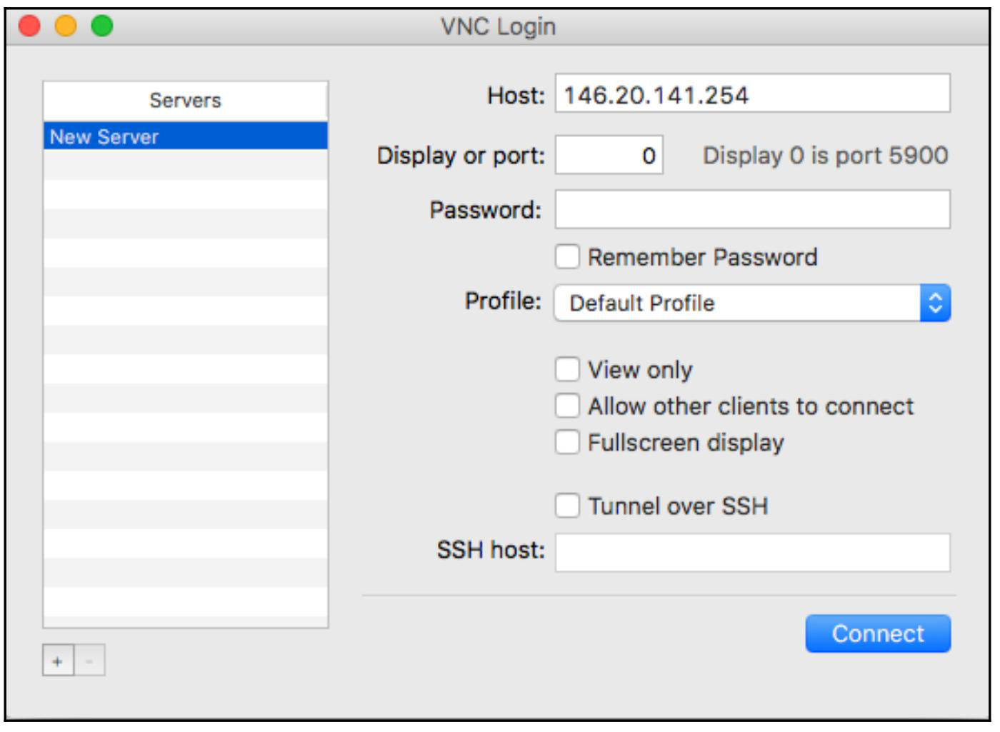
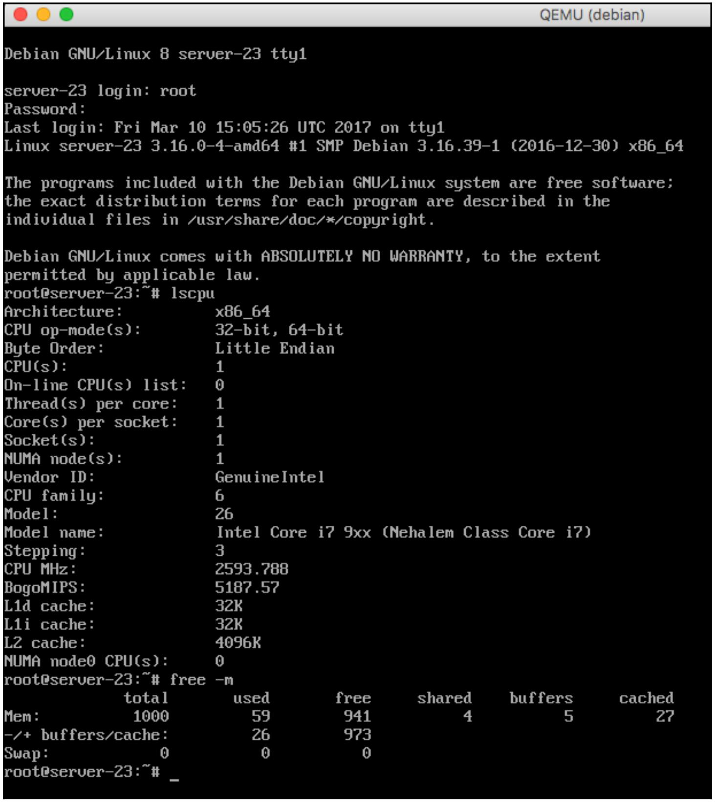

Содержание
Глава 1. Начало работы с QEMU и KVM
Управление образами дисков при помощи qemu-img
Подготовка образов для установки ОС при помощи qemu-nbd
Установка пользовательской ОС в образ при помощи debootstrap
Применение предварительно подготовленных образов
Выполнение ВМ при помощи qemu-system-*
Подключение к исполняемому экземпляру при помощи VNC
В данной главе мы обсудим следующие вопросы:
QEMU (Quick Emulator) является основным компонентом комплекта технологии виртуализации QEMU/ KVM. Он предоставляет аппаратную виртуализацию и эмуляцию процессора. QEMU исполняется в пространстве пользователя и, без необходимости в ядре, драйверы всё ещё могут предоставлять быструю эмуляцию системы. QEMU поддерживает два режима операционной системы:
В этой книге мы намереваемся сосредоточиться на эмуляции системы целиком с полным аппаратным ускорением, предоставляемым гипервизором KVM (Kernel-based Virtual Machine).
В данной главе мы начнём с установки QEMU на Linux, затем исследуем различные примеры построения, сопровождения, управления и использования образов лиска для экземпляров виртуальных машин. Затем мы выполним глубокий обзор исполнения QEMU в режиме эмуляции всей системы с применением предстоставляемых исполняемых кодов. Наконец, мы собираемся закончить эту главу подробностями о том, как подключаться к тем виртуальным машинам, которые мы запускали ранее с использованием клиентов VNC.
В данном рецепте мы рассмотрим установку QEMU на некотором отдельном сервере при помощи предоставляемых пакетов дистрибутивов. Для промышленных сред мы рекомендуем заранее откомпилированные, собранные в пакет версии QEMU для более простого и согласованного развёртывания. Однако, мы собираемся рассмотреть некий пример того как скомпилировать QEMU из исходных кодов в том случае, когда вам необходима определённая версия, которую вы позднее пожелаете собрать в пакет.
В зависимости от вашего дистрибутива Linux само название пакета и команду установки могут отличаться. Вы можете применять свою систему диспетчера пакетов, например apt, dnf или yum для поиска каких- либо пакетов, содержащих строку QEMU и ознакомиться с теми, которые доступны для вашего конкретного случая. Все исходные годы могут быть выгружены с официального вебсайта проекта по адресу http://www.qemu-project.org/download/#source.
Чтобы установить QEMU из пакетов в дистрибутиве Ubuntu/ Debian выполните следующие шаги:
root@kvm:~# apt-get update
root@kvm:~# apt-get install -y qemu
В дистрибутивах CentOS/RHEL выполните:
Чтобы установить из исходного кода выполните процедуру:
root@kvm:~#cd /usr/src && wget
http://download.qemu-project.org/qemu-2.8.0.tar.xz
root@kvm:/usr/src# tar xvJf qemu-2.8.0.tar.xz && cd qemu-2.8.0
root@kvm:/usr/src/qemu-2.8.0# ./configure
root@kvm:/usr/src/qemu-2.8.0# make && make install
Настройка QEMU достаточно тривиальна, как мы только что увидели. Давайте взглянем на то, какие метапакеты QEMU утсанавливаются в Ubuntu:
root@kvm:~# dpkg --list | grep qemu
ii ipxe-qemu 1.0.0+git-20150424.a25a16d-1ubuntu1 all PXE boot firmware - ROM images for qemu
ii qemu 1:2.5+dfsg-5ubuntu10.8 amd64 fast processor emulator
ii qemu-block-extra:amd64 1:2.5+dfsg-5ubuntu10.8 amd64 extra block backend modules for qemu-system and qemu-utils
ii qemu-slof 20151103+dfsg-1ubuntu1 all Slimline Open Firmware -- QEMU PowerPC version
ii qemu-system 1:2.5+dfsg-5ubuntu10.8 amd64 QEMU full system emulation binaries
ii qemu-system-arm 1:2.5+dfsg-5ubuntu10.8 amd64 QEMU full system emulation binaries (arm)
ii qemu-system-common 1:2.5+dfsg-5ubuntu10.8 amd64 QEMU full system emulation binaries (common files)
ii qemu-system-mips 1:2.5+dfsg-5ubuntu10.8 amd64 QEMU full system emulation binaries (mips)
ii qemu-system-misc 1:2.5+dfsg-5ubuntu10.8 amd64 QEMU full system emulation binaries (miscelaneous)
ii qemu-system-ppc 1:2.5+dfsg-5ubuntu10.8 amd64 QEMU full system emulation binaries (ppc)
ii qemu-system-sparc 1:2.5+dfsg-5ubuntu10.8 amd64 QEMU full system emulation binaries (sparc)
ii qemu-system-x86 1:2.5+dfsg-5ubuntu10.8 amd64 QEMU full system emulation binaries (x86)
ii qemu-user 1:2.5+dfsg-5ubuntu10.8 amd64 QEMU user mode emulation binaries
ii qemu-user-binfmt 1:2.5+dfsg-5ubuntu10.8 amd64 QEMU user mode binfmt registration for qemu-user
ii qemu-utils 1:2.5+dfsg-5ubuntu10.8 amd64 QEMU utilities
root@kvm:~#
Из пердыдущего вывода мы можем видеть, что в процесс вовлечено несколько пакетов. Если вам это интересно, вы можете прочитать их индивидуальные описания чтобы ознакомиться с тем, что именно предоставляет каждый из пакетов.
Заслуживает внимания тот факт, что все исполняемые файлы упомянутых выше пакетов начинаются с префикса QEMU. Вы можете применять завершение клавиши tab для просмотра списка всех доступных для исполнения файлов:
root@kvm:~# qemuqemu-aarch64 qemu-io qemu-mips64el qemu-ppc64 qemu-sparc32plus qemu-system-lm32 qemu-system-mipsel qemu-system-sh4 qemu-system-xtensa
qemu-alpha qemu-m68k qemu-mipsel qemu-ppc64abi32 qemu-sparc64 qemu-system-m68k qemu-system-moxie qemu-system-sh4eb qemu-system-xtensaeb
qemu-arm qemu-make-debian-root qemu-mipsn32 qemu-ppc64le qemu-system-aarch64 qemu-system-microblaze qemu-system-or32 qemu-system-sparc qemu-tilegx
qemu-armeb qemu-microblaze qemu-mipsn32el qemu-s390x qemu-system-alpha qemu-system-microblazeel qemu-system-ppc qemu-system-sparc64 qemu-unicore32
qemu-cris qemu-microblazeel qemu-nbd qemu-sh4 qemu-system-arm qemu-system-mips qemu-system-ppc64 qemu-system-tricore qemu-x86_64
qemu-i386 qemu-mips qemu-or32 qemu-sh4eb qemu-system-cris qemu-system-mips64 qemu-system-ppc64le qemu-system-unicore32
qemu-img qemu-mips64 qemu-ppc qemu-sparc qemu-system-i386 qemu-system-mips64el qemu-system-ppcemb qemu-system-x86_64
root@kvm:~#
Мы можем заметить, что имеется по одному исполняемому файлу для каждого типа архитектуры, который мы имеем возможность эмулировать.
Управление образами дисков при помощи qemu-img
Чтобы исполнять виртуальные машины, QEMU требуются образы для хранения определённой файловой системы данной гостевой ОС. Такой образ сам по себе имеет тип некоторого файла и он представляет всю гостевую файловую систему, расположенную в некотором виртуальном диске. QEMU поддерживает различные образы и предоставляет инструменты для создания и управления ими. В данном рецепте мы намереваемся построить некий пустой образ диска с помощью утилиты qemu-img.
Чтобы воспользоваться данным рецептом, нам необходимо иметь установленной утилиту qemu-img.. Если вы следовали всем шагам в первом рецепте, вы должны её иметь. Чтобы проверить какие типы образов поддерживаются в вашем дистрибутиве Linux, исполните следующую команду:
root@kvm:~# qemu-img -h | grep Supported
Supported formats: bochs vvfat rbd vpc parallels tftp ftp ftps raw https qcow dmg http qcow2 quorum null-aio cloop vdi iscsi null-co vhdx blkverify file vmdk host_cdrom blkdebug host_device sheepdog qed nbd
root@kvm:~#
Из предыдущего вывода мы можем обнаружить, что имеется много поддерживаемых образов в данной тестовой системе, которые мы можем применять. Убедитесь, что ваша версия QEMU поддерживает тип сырого (raw) образа, поскольку он является типом по умолчанию и именно его мы собираемся применять в данном рецепте. одним из наиболее часто применяемых типов является qcow2, который поддерживает копирование при записи {Прим. пер.: механизм, при котором все изменения осуществляются новой записью}, сжатием, шифрованием, а также созданием моментальных снимков. Мы собираемся усилиться с его помощью в последующих рецептах. {Прим. пер.: для справки: основной формат, применяемый в VMWare/ ESXi .vmdk, в Citrix/ XenServer .xva, в Microsoft/ Hyper-V .vhdx Подробнее см. {Прим. пер.: см. Также ознакомьтесь....}
|
Замечание | |
|
Заметьте, пожалуйста, что хотя QEMU поддерживает множество форматов, это совсем не означает, что вы можете исполнять в нём эти виртуальные машины. Однако, qemu-img может быть использован для преобразования различных образов в форматы raw и qcow2. Для лучшей производительности применяйте raw или qcow2. |
Для создания пустого образа raw определённого размера и проверки того то этот файл был создан на данном хосте:
root@kvm:~# qemu-img create -f raw debian.img 10G
Formatting 'debian.img', fmt=raw size=10737418240
root@kvm:~#
root@kvm:~# ls -lah debian.img
-rw-r--r-- 1 root root 10G Feb 10 16:58 debian.img
root@kvm:~#
root@kvm:~# file -s debian.img
debian.img: data
root@kvm:~#
root@kvm:~# qemu-img info debian.img
image: debian.img
file format: raw
virtual size: 10G (10737418240 bytes)
disk size: 0
root@kvm:~#
Утилита qemu-img позволяет нам создавать, преобразовывать и изменять образы гостей.
На 1 шаге мы воспользовались конкретным флагом -f определяющим выбранный нами формат файла, в данном случае это raw, само название данного подлежащего созданию образа и его размер в гигабайтах.
На шаге 4 мы воспользовались подкомандой info для получения дополнительной информации о данном имеющемся образе. Отметим, что имеющийся размер диска, отображаемый в настоящий момент равен нулю. Мы собираемся создать что- то в своём следующем рецепте.
В данном рецепте мы перечислили поддерживаемые QEMU форматы дисков. Ниже мы представляем краткое описание наиболее общих типов, с которыми вы можете встретиться:
В данной книге мы собираемся пользоваться форматами дисков raw и qcow2, поскольку они предоставляют наилучшую производительность и набор средств для исполнения и манипуляции ими.
Подготовка образов для установки ОС при помощи qemu-nbd
В предыдущем рецепте мы создали некий пустой образ raw. В данном рецепт мы собираемся сделать в нём некий раздел и какую- то файловую систему, подготовив этот образ для полной установки гостевой ОС. При создании таких раздела и файловой системы вам следует рассмотреть тот тип загрузки, который создаст этот виртуальный экземпляр. Если ваше приложение исполняется внутри ВМ с ограниченными операциями ввода/ вывода, вы можете рассмотреть для его файловой системы XFS. В данном рецепте мы собираемся применить EXT4, так как большая часть дистрибутивов Linux боддерживают её сразу после установки.
Для данного рецепта нам понадобятся следующие инструменты:
Большинство дистрибутивов Linux должны уже иметь все эти инструменты установленными, если это не так, ознакомьтесь с документацией своего дистрибутива по поводу того, как их установить.
Выполните следующие обозначенные шаги чтобы разметить диск и создать некую файловую систему в своём пустом образе:
root@kvm:~# modprobe nbd
root@kvm:~#
root@kvm:~# qemu-nbd --format=raw --connect=/dev/nbd0 debian.img
root@kvm:~#
root@kvm:~# sfdisk /dev/nbd0 << EOF
>,1024,82
>;
>EOF
Checking that no-one is using this disk right now ...
OK
Disk /dev/nbd0: cannot get geometry
Disk /dev/nbd0: 1305 cylinders, 255 heads, 63 sectors/track
sfdisk: ERROR: sector 0 does not have an msdos signature
/dev/nbd0: unrecognized partition table type
Old situation:
No partitions found
New situation:
Units = cylinders of 8225280 bytes, blocks of 1024 bytes, counting from 0
Device Boot Start End #cyls #blocks Id System
/dev/nbd0p1 0+ 1023 1024- 8225279+ 82 Linux swap / Solaris
/dev/nbd0p2 1024 1304 281 2257132+ 83 Linux
/dev/nbd0p3 0 - 0 0 0 Empty
/dev/nbd0p4 0 - 0 0 0 Empty
Warning: no primary partition is marked bootable (active)
This does not matter for LILO, but the DOS MBR will not boot this disk.
Successfully wrote the new partition table
Re-reading the partition table ...
If you created or changed a DOS partition, /dev/foo7, say, then use dd(1)
to zero the first 512 bytes: dd if=/dev/zero of=/dev/foo7 bs=512 count=1
(See fdisk(8).)
root@kvm:~#
root@kvm:~# ls -la /dev/nbd0*
brw-rw---- 1 root disk 43, 0 Feb 10 18:24 /dev/nbd0
brw-rw---- 1 root disk 43, 1 Feb 10 18:24 /dev/nbd0p1
brw-rw---- 1 root disk 43, 2 Feb 10 18:24 /dev/nbd0p2
root@kvm:~#
root@kvm:~# mkswap /dev/nbd0p1
Setting up swapspace version 1, size = 508 KiB (520192 bytes)
no label, UUID=c246fe39-1bc5-4978-967c-806264771d69
root@kvm:~#
root@kvm:~# mkfs.ext4 /dev/nbd0p2
mke2fs 1.42.13 (17-May-2015)
Discarding device blocks: failed - Input/output error
Creating filesystem with 2620928 4k blocks and 655360 inodes
Filesystem UUID: 2ffa23de-579a-45ad-abbc-2a179de67f11
Superblock backups stored on blocks:
32768, 98304, 163840, 229376, 294912, 819200, 884736, 1605632
Allocating group tables: done
Writing inode tables: done
Creating journal (32768 blocks): done
Writing superblocks and filesystem accounting information: done
root@kvm:~#
Мы воспользовались преимуществами функциональности, которые предоставляет модуль ядра nbd, предоставляя нам возможность связать некий файл образа raw с блочным устройством при помощи утилиты qemu-nbd. Для получения дополнительной информации об этом модуле ядра исполните следующий код:
root@kvm:~# modinfo nbd
filename: /lib/modules/4.4.0-62-generic/kernel/drivers/block/nbd.ko
license: GPL
description: Network Block Device
srcversion: C67096AF2AE3C738DBE0B7E
depends:
intree: Y
vermagic: 4.4.0-62-generic SMP mod_unload modversions
parm: nbds_max:number of network block devices to initialize (default: 16) (int)
parm: max_part:number of partitions per device (default: 0) (int)
root@kvm:~#
Мы можем опросить метаданные своего блочного устройства, которое мы создали на шаге 2 выполнив такую команду:
root@kvm:~# file -s /dev/nbd0
/dev/nbd0: x86 boot sector
root@kvm:~#
После создания двух новых разделов на шаге 3 изменился тип самого файла образа. Давайте опросим его снова:
root@kvm:~# file -s debian.img
debian.img: x86 boot sector
root@kvm:~#
|
Замечание | |
|
Мы выбрали использование утилиты sfdisk для создания необходимых разделов, но вы можете применить интерактивно и утилиту fdisk, если вы предпочитаете её. Окончательный результат будет одним и тем же. |
Теперь, когда у нас имеется файл некого образа, который содержит два раздела и какую- то файловую систему, мы можем продолжить установку своей гостевой ОС в нашем следующем рецепте.
Установка пользовательской ОС в образ при помощи debootstrap
В данном рецепте мы собираемся воспользоваться утилитой debootstrap для установки дистрибутива Debian в том образе raw, который мы подготовили в двух предыдущих рецептах. Сама команда debootstrap применяется для самозагрузки некоторой базовой системы Debian с применением определённого общедоступного зеркала. К концу данного рецепта мы должны иметь некий образ, содержащий полный дистрибутив Linux готовый к исполнению QEMU.
Для выполнения данного рецепта мы будем нуждаться в следующем:
Чтобы убедиться что область подкачки и блочное устройство корня всё ещё присутствуют в вашей системе, исполните следующее:
root@kvm:~# ls -la /dev/nbd0*
brw-rw---- 1 root disk 43, 0 Feb 10 18:24 /dev/nbd0
brw-rw---- 1 root disk 43, 1 Feb 10 18:24 /dev/nbd0p1
brw-rw---- 1 root disk 43, 2 Feb 10 18:24 /dev/nbd0p2
root@kvm:~#
Если что- то находится не на своём месте, повторите, пожалуйста, рецепт Подготовка образов для установки ОС при помощи qemu-nbd по поводу того как связать свой образ raw с необходимым блочным устройством /deb/nbd0.
Чтобы установить утилиту debootstrap, если она ещё не присутствует у вас в системе, исполните следующий код:
root@kvm:~# apt install -y debootstrap
...
Setting up debootstrap (1.0.78+nmu1ubuntu1.2) ...
root@kvm:~#
Для установки некоторого нового дистрибутива Debian в своё устройство raw следуйте набросанным далее шагам:
root@kvm:~# mount /dev/nbd0p2 /mnt/
root@kvm:~# mount | grep mnt
/dev/nbd0p2 on /mnt type ext4 (rw)
root@kvm:~#
root@kvm:~# debootstrap --arch=amd64 --include="openssh-server vim" stable /mnt/ http://httpredir.debian.org/debian/
...
I: Base system installed successfully.
root@kvm:~#
root@kvm:~# ls -lah /mnt/
total 100K drwxr-xr-x 22 root root 4.0K Feb 10 17:19 .
drwxr-xr-x 23 root root 4.0K Feb 10 15:29 ..
drwxr-xr-x 2 root root 4.0K Feb 10 17:19 bin
drwxr-xr-x 2 root root 4.0K Dec 28 17:42 boot
drwxr-xr-x 4 root root 4.0K Feb 10 17:18 dev
drwxr-xr-x 55 root root 4.0K Feb 10 17:19 etc
drwxr-xr-x 2 root root 4.0K Dec 28 17:42 home
drwxr-xr-x 12 root root 4.0K Feb 10 17:19 lib
drwxr-xr-x 2 root root 4.0K Feb 10 17:18 lib64
drwx------ 2 root root 16K Feb 10 17:06 lost+found
drwxr-xr-x 2 root root 4.0K Feb 10 17:18 media
drwxr-xr-x 2 root root 4.0K Feb 10 17:18 mnt
drwxr-xr-x 2 root root 4.0K Feb 10 17:18 opt
drwxr-xr-x 2 root root 4.0K Dec 28 17:42 proc
drwx------ 2 root root 4.0K Feb 10 17:18 root
drwxr-xr-x 4 root root 4.0K Feb 10 17:19 run
drwxr-xr-x 2 root root 4.0K Feb 10 17:19 sbin
drwxr-xr-x 2 root root 4.0K Feb 10 17:18 srv
drwxr-xr-x 2 root root 4.0K Apr 6 2015 sys
drwxrwxrwt 2 root root 4.0K Feb 10 17:18 tmp
drwxr-xr-x 10 root root 4.0K Feb 10 17:18 usr
drwxr-xr-x 11 root root 4.0K Feb 10 17:18 var
root@kvm:~#
root@kvm:~# mount --bind /dev/ /mnt/dev
root@kvm:~#
root@kvm:~# ls -la /mnt/dev/ | grep nbd0
brw-rw---- 1 root disk 43, 0 Feb 10 18:24 nbd0
brw-rw---- 1 root disk 43, 1 Feb 10 18:26 nbd0p1
brw-rw---- 1 root disk 43, 2 Feb 10 18:26 nbd0p2
root@kvm:~#
root@kvm:~# chroot /mnt/
root@kvm:/# pwd
/ r
oot@kvm:/#
root@kvm:/# cat /etc/debian_version
8.7
root@kvm:/#
New-VM -Name VM01 -Generation 2
proc and sysfs
root@kvm:/# mount -t proc none /proc
root@kvm:/# mount -t sysfs none /sys
root@kvm:/#
root@kvm:/# apt-get install -y --force-yes linux-image-amd64 grub2
|
Замечание | |
|
Если вы получите запрос на выбор целевого устройства для установки в нём GRUB, не выбирайте никакого и просто продолжите. |
root@kvm:/# grub-install /dev/nbd0 --force
Installing for i386-pc platform.
grub-install: warning: this msdos-style partition label has no post-MBR gap; embedding won't be possible.
grub-install: warning: Embedding is not possible. GRUB can only be installed in this setup by using blocklists. However, blocklists are UNRELIABLE and their use is discouraged..
Installation finished. No error reported.
root@kvm:/#
root@kvm:/# update-grub2
Generating grub configuration file ...
Found linux image: /boot/vmlinuz-3.16.0-4-amd64
Found initrd image: /boot/initrd.img-3.16.0-4-amd64
done
root@kvm:/#
root@kvm:/# passwd
Enter new UNIX password:
Retype new UNIX password:
passwd: password updated successfully
root@kvm:/#
root@kvm:/# echo "pts/0" >> /etc/securetty
root@kvm:/#
root@kvm:/# systemctl set-default multi-user.target
Created symlink from /etc/systemd/system/default.target to /lib/systemd/system/multi-user.target.
root@kvm:/#
root@kvm:/# echo "/dev/sda2 / ext4 defaults,discard 0 0" > /etc/fstab
root@kvm:/# umount /proc/ /sys/ /dev/
root@kvm:/# exit
exit
root@kvm:~#
root@kvm:~# grub-install /dev/nbd0 --root-directory=/mnt --modules="biosdisk part_msdos" --force
Installing for i386-pc platform.
grub-install: warning: this msdos-style partition label has no post-MBR gap; embedding won't be possible.
grub-install: warning: Embedding is not possible. GRUB can only be installed in this setup by using blocklists. However, blocklists are UNRELIABLE and their use is discouraged..
Installation finished. No error reported.
root@kvm:~#
root@kvm:~# sed -i 's/nbd0p2/sda2/g' /mnt/boot/grub/grub.cfg
root@kvm:~#
root@kvm:~# umount /mnt
root@kvm:~#
root@kvm:~# qemu-nbd --disconnect /dev/nbd0
/dev/nbd0 disconnected
root@kvm:~#
В предыдущем разделе много чего произошло, поэтому давайте сразу перейдём к командам и обсудим слегка подробнее то, что в точности произошло и почему.
На 1 шаге мы смонтировали свой корневой раздел, который мы создали ранее в своём устройстве /dev/nbd0p2 в /mnt, таким образом, мы можем его применять. Раз монтирование выполнено, на шаге 2 мы устанавливаем весь дистрибутив Debian в этом устройстве применяя в качестве целевой данную точку монтирования.
Чтобы установить необходимый начальный загрузчик GRUB в данном корневом разделе, мы привязываем и монтируем свой каталог /dev из имеющейся файловой системы хоста в файловую систему выстраиваемого образа в /mnt на шаге 4.
Затем на шаге 6 мы применяем инструмент chroot чтобы изменить пространство имён своего каталога с тем, чтобы оно было /mnt, поэтому мы можем выполнять операции так, как будто мы напрямую находимся в этой новой ОС.
На шаге 8 мы монтируем виртуальные файловые системы proc и sysfs внутри данного образа, так как их ожидает начальный загрузчик GRUB.
На шаге 9 мы продолжаем установку исходного кода своего ядра и инструментов GRUB в подготовке к установке самого начального загрузчика в его загрузочный раздел и на шаге 10 мы устанавливаем этот начальный загрузчик.
На шаге 11 были созданы сами файлы настройки GRUB и был обновлён имеющийся образ загрузочного ramdisk.
На шагах 12, 13 и 14 мы изменили установленный пароль root и убедились что мы получаем доступ к певдо- Терминалу, поэтому мы сможем зарегистрироваться в этой ВМ позже, а также изменили текущий уровень исполнения с определённого по умолчанию графического интерфейса на многопользовательский.
Так как имеющийся файл fstab сразу после установки ОС Debian в данном образе является пустым, мы добавили точку монтирования своего корня, иначе наша ВМ не будет иметь возможности запуска. Это было осуществлено на шаге 15.
На шагах 16 и 17 мы выполнили некоторую очистку размонтировав смонтированные нами ранее необходимые файловые системы и вышли из своей среды chroot.
Вернувшись обратно в файловую систему своего хоста на шаге 18, мы установили GRUB в своём устройстве nbd0 определив необходимое положение монтирования данного образа.
На шаге 19 мы обновили имя устройства настройки GRUB на sda2, так как это именно то имя, которое будет возникать внутри данной виртуальной машины после её запуска. Само имя nbd0p2 присутствует только пока мы вынуждены поддерживать связь между своим образом raw и соответствующим сетевым блочным устройством ОС нашего хоста. С точки зрения самой ВМ, именно второй раздел внутри данного созданного нами образа по умолчанию имеет имя sda2.
И, наконец, на шагах 20 и 21 мы выполняем некоторую очистку удаляя имеющуюся точку монтирования и отсоединяя свой образ raw от сетевого блочного устройства nbd0.
В данном рецепте мы собираемся обследовать как изменять размер имеющегося образа raw, размещаемые в нём размеры и саму файловую систему поверх этих разделов.Мы собираемся применять свой образ raw, который мы построили в своих предыдущих рецептах, который содержит разделы подкачки и некоторого корня с отформатированной в нём файловой системой EXT4.
В данном разделе мы собираемся применять следующие инструменты:
Большая часть из этих утилит должна уже быть установлена в Ubuntu, за исключением kpartx. Чтобы установить его, исполните следующее:
root@kvm:~# apt install kpartx
Приводимые далее шаги демонстрируют как добавить дополнительное пространство в наш образ raw, который мы создали ранее, расширить раздел корня и изменить размер файловой системы. К окончанию данного рецепта первоначальный размер файла образа raw должен измениться с 10 ГБ до 20 ГБ.
root@kvm:~# qemu-img info debian.img
image: debian.img
file format: raw
virtual size: 10G (10737418240 bytes)
disk size: 848M
root@kvm:~#
root@kvm:~# qemu-img resize -f raw debian.img +10GB
Image resized.
root@kvm:~#
|
Замечание | |
|
Имейте в виду, что не все типы образов поддерживают изменение размера. Чтобы изменить размер такого образа вам необходимо преобразовать его вначале в образ raw при помощи команды преобразования qemu-img. |
root@kvm:~# qemu-img info debian.img
image: debian.img
file format: raw
virtual size: 20G (21474836480 bytes)
disk size: 848M
root@kvm:~#
root@kvm:~# losetup -f
/dev/loop0
root@kvm:~#
root@kvm:~# losetup /dev/loop1 debian.img
root@kvm:~#
root@kvm:~# kpartx -av /dev/loop1
add map loop1p1 (252:0): 0 1024 linear 7:1 2048
add map loop1p2 (252:1): 0 20967424 linear 7:1 4096
root@kvm:~#
root@kvm:~# ls -la /dev/mapper
total 0
drwxr-xr-x 2 root root 100 Mar 9 19:10 .
drwxr-xr-x 20 root root 4760 Mar 9 19:10 ..
crw------- 1 root root 10, 236 Feb 10 23:25 control
lrwxrwxrwx 1 root root 7 Mar 9 19:10 loop1p1
lrwxrwxrwx 1 root root 7 Mar 9 19:10 loop1p2
root@kvm:~#
root@kvm:~# tune2fs -l /dev/mapper/loop1p2
tune2fs 1.42.13 (17-May-2015)
Filesystem volume name: <none>
Last mounted on: /
Filesystem UUID: 96a73752-489a-435c-8aa0-8c5d1aba3e5f
Filesystem magic number: 0xEF53
Filesystem revision #: 1 (dynamic)
Filesystem features: has_journal ext_attr resize_inode dir_index filetype needs_recovery extent flex_bg sparse_super large_file huge_file uninit_bg dir_nlink extra_isize Filesystem flags: signed_directory_hash
Default mount options: user_xattr acl
Filesystem state: clean
Errors behavior: Continue
Filesystem OS type: Linux
Inode count: 655360
Block count: 2620928
Reserved block count: 131046
Free blocks: 2362078
Free inodes: 634148
First block: 0
Block size: 4096
Fragment size: 4096
Reserved GDT blocks: 639
Blocks per group: 32768
Fragments per group: 32768
Inodes per group: 8192
Inode blocks per group: 512
Flex block group size: 16
Filesystem created: Fri Feb 10 23:29:01 2017
Last mount time: Thu Mar 9 19:09:25 2017
Last write time: Thu Mar 9 19:08:23 2017
Mount count: 12
Maximum mount count: -1
Last checked: Fri Feb 10 23:29:01 2017
Check interval: 0 (<none>)
Lifetime writes: 1621 MB
Reserved blocks uid: 0 (user root)
Reserved blocks gid: 0 (group root)
First inode: 11
Inode size: 256
Required extra isize: 28
Desired extra isize: 28
Journal inode: 8
Default directory hash: half_md4
Directory Hash Seed: f101cccc-944e-4773-8644-91ebf4bd4f2d
Journal backup: inode blocks
root@kvm:~#
root@kvm:~# e2fsck /dev/mapper/loop1p2
e2fsck 1.42.13 (17-May-2015)
/dev/mapper/loop1p2: recovering journal Setting free blocks count to 2362045 (was 2362078) /dev/mapper/loop1p2: clean, 21212/655360 files, 258883/2620928 blocks
root@kvm:~#
root@kvm:~# tune2fs -O ^has_journal /dev/mapper/loop1p2
tune2fs 1.42.13 (17-May-2015)
root@kvm:~#
root@kvm:~# tune2fs -l /dev/mapper/loop1p2 | grep "features"
Filesystem features: ext_attr resize_inode dir_index filetype extent flex_bg sparse_super large_file huge_file uninit_bg dir_nlink extra_isize
root@kvm:~#
root@kvm:~# kpartx -dv /dev/loop1
del devmap : loop1p2
del devmap : loop1p1
root@kvm:~#
root@kvm:~# losetup -d /dev/loop1
root@kvm:~#
root@kvm:~# qemu-nbd --format=raw --connect=/dev/nbd0 debian.img root@kv
root@kvm:~# fdisk /dev/nbd0
Command (m for help): p
Disk /dev/nbd0: 21.5 GB, 21474836480 bytes
255 heads, 63 sectors/track, 2610 cylinders, total 41943040 sectors
Units = sectors of 1 * 512 = 512 bytes
Sector size (logical/physical): 512 bytes / 512 bytes
I/O size (minimum/optimal): 512 bytes / 512 bytes
Disk identifier: 0x00000000
Device Boot Start End Blocks Id System
/dev/nbd0p1 1 16450559 8225279+ 82 Linux swap / Solaris
/dev/nbd0p2 16450560 20964824 2257132+ 83 Linux
Command (m for help): d
Partition number (1-4): 2
Command (m for help): n
Partition type:
p primary (1 primary, 0 extended, 3 free)
e extended
Select (default p): p
Partition number (1-4, default 2): 2
First sector (16450560-41943039, default 16450560):
Using default value 16450560
Last sector, +sectors or +size{K,M,G} (16450560-41943039, default 41943039):
Using default value 41943039
Command (m for help): w
The partition table has been altered!
Calling ioctl() to re-read partition table.
Syncing disks.
root@kvm:~#
root@kvm:~# losetup /dev/loop1 debian.img
root@kvm:~# kpartx -av /dev/loop1
add map loop1p1 (252:2): 0 1024 linear 7:1 2048
add map loop1p2 (252:3): 0 41938944 linear 7:1 4096
root@kvm:~#
root@kvm:~# e2fsck -f /dev/mapper/loop1p2
e2fsck 1.42.13 (17-May-2015)
Pass 1: Checking inodes, blocks, and sizes
Pass 2: Checking directory structure
Pass 3: Checking directory connectivity
Pass 4: Checking reference counts
Pass 5: Checking group summary information
/dev/mapper/loop1p2: 21212/655360 files (0.2% non-contiguous), 226115/2620928 blocks
root@kvm:~#
root@kvm:~# resize2fs /dev/nbd0p2
resize2fs 1.42.13 (17-May-2015)
Resizing the filesystem on /dev/mapper/loop1p2 to 5242368 (4k) blocks.
The filesystem on /dev/mapper/loop1p2 is now 5242368 (4k) blocks long.
root@kvm:~#
root@kvm:~# tune2fs -j /dev/mapper/loop1p2
tune2fs 1.42.13 (17-May-2015)
Creating journal inode: done
root@kvm:~#
New-VM -Name VM01 -Generation 2root@kvm:~# kpartx -dv /dev/loop1
del devmap : loop1p2
del devmap : loop1p1
root@kvm:~# losetup -d /dev/loop1
root@kvm:~#
Изменение размера для ВМ может быть каким- то образом связано с тем, что мы видели во всех шагах предыдущего раздела. Всё может усложниться если в одном и том же образе имеются несколько разделов Linux, тем более, если мы применяем LVM (Logical Volume Management). Давайте пройдём пошагово по всем выполненным нами ранее командам и более подробно объясним почему мы их выполнили и зачем мы это сделали.
На шаге 1 мы подтвердили значение текущего размера своего образа, которое составляет 10 ГБ.
На шаге 2 мы добавили 10 ГБ в самый конец данного образа и удостоверились, что в этом новом размере образа на шаге 3.
Аннулируем тот образ, который мы построили в предыдущих рецептах и который содержал два раздела, подкачки и корня. Нам нужен способ работать с ними по отдельности. В частности, мы бы желали выделить то дополнительное пространство, которое мы добавили на шаге 2, в свой корневой раздел. Для того чтобы сделать это, нам необходимо выставить его как некое блочное устройство, с которым мы просто сможем манипулировать стандартными утилитами диска и файловой системы. Мы осуществляем это на шаге 5 с применением команды losetup, что в результате делает соответствие между нашим образом и неким новым блочным устройством с именем /dev/loop1. На шаге 6 мы выставляем два индивидуальных раздела как два отображения новых устройств. Причём /dev/mapper/loop1p2 является тем корневым разделом, к которому мы бы хотели добавить в конец всё неиспользуемое дисковое пространство.
Прежде чем мы сможем изменить размер отведённый под раздел в своём петлевом устройстве, нам необходимо проверить целостность его файловой системы и именно это мы выполняем на шаге9. Так как мы применяем файловую систему с журналом, нам необходимо удалить имеющийся журнал, прежде чем мы изменим размер. Мы выполняем это на шаге 10 и убеждаемся что наш атрибут has_journal не отображается после выполнения на шаге 11 команды tune2fs.
Теперь нам необходимо работать напрямую с основным блочным устройством вместо работы с индивидуальными разделами. Мы удаляем установленное соответствие на шагах 12 и 13 и ассоциируем некое новое блочное устройство со своим файлом образа при помощи команды qemu-nbd на шаге 14. Наше новое блочное устройство /dev/nbd0 теперь представляет целиком весь диск данной гостевой ВМ и он напрямую отображает то, что находится внутри данного образа raw. Мы можем применять это блочное устройство в точности так же как другой обычный диск и, что ещё более важно, можем применять инструмент, подобный fdisk для его опроса и манипуляций с расположенными внутри него разделами.
На шаге 15 мы применяем утилиту fdisk для удаления своего корневого раздела и его повторного создания. Это не разрушает никакие данные файловой системы, однако изменяет её метаданные, выделяя то дополнительное пространство, которое мы добавили ранее как часть своего корневого раздела.
Теепрь, когда данное блочное устройство имеет всё выделенной нашему корневому разделу дисковое пространство, нам необходимо расширить саму файловую систему, которая располагается поверх него. Мы делаем это вначале повторно создавая индивидуальное отображение раздела, как мы это делали раньше, чтобы выставить свой корневой раздел напрямую так, чтобы мы могли могли вновь манипулировать им. Мы делаем это на шагах 16 и 17.
На шагах 18 и 19 мы проверяем целостность своей корневой файловой системы, затем мы изменяем её размер до максимального значения доступного дискового пространства в том корневом разделе, в котором она расположена.
Наконец, на шаге 20, мы вновь удаляем имеющееся отображение. Теперь данный образ, а именно корневой раздел внутри данного образа, а также его файловая система EXT4 поверх данного раздела Linux изменены в размере до 20 ГБ.
Вы можете проверить имеющийся новый размер корневого раздела запустив новый экземпляр QEMU с использованием данного образа. Мы собираемся проделать именно это в некотором отдельном рецепте данной главы.
Применение предварительно подготовленных образов
В рецепте Установка пользовательской ОС в образ при помощи debootstrap мы увидели как применять команду debootstrap для установки Debian в построенный нами образ. Большинство вендоров Linux предоставляют уже построенные образы своих дистрибутивов для различных архитектур. Устанавливаемые образы также доступны для ручной установки необходимых гостевых ОС. В данном рецепте мы собираемся продемонстрировать как получить и опробовать образы CentOS и Debian, которые уже были построены. В следующем рецепте мы собираемся показать как запускать QEMU/KVM экземпляры с применением тех же самых образов.
Для данного рецепта нам понадобится QEMU, установленный в ОС нашего хоста. Для получения инструкций о том, как устанавливать QEMU, пожалуйста, воспользуйтесь рецептом Установка и настройка QEMU в этой главе. Нам также потребуется утилита wget для загрузки всех образов с наших восходящих общедоступных репозиториев.
Чтобы получить образы Debian Wheezy для использования c QEMU и KVM выполните следующее:
root@kvm:~tmp# wget https://people.debian.org/~aurel32/qemu/amd64/debian_wheezy_amd64_standard.qcow2
--2017-03-09 22:07:20-- 2 Resolving people.debian.org (people.debian.org)... 2001:41c8:1000:21::21:30, 5.153.231.30 Connecting to people.debian.org (people.debian.org)|2001:41c8:1000:21::21:30|:443... connected. HTTP request sent, awaiting response... 200 OK Length: 267064832 (255M) Saving to: ‘debian_wheezy_amd64_standard.qcow2’ debian_wheezy_amd64_standard.qcow2 100% . [===================================>] 254.69M 35.8MB/s in 8.3s 2017-03-09 22:07:29 (30.9 MB/s) - ‘debian_wheezy_amd64_standard.qcow2’ saved [267064832/267064832]
root@kvm:~#
root@kvm:~# qemu-img info debian_wheezy_amd64_standard.qcow2
image: debian_wheezy_amd64_standard.qcow2
file format: qcow2
virtual size: 25G (26843545600 bytes)
disk size: 261M
cluster_size: 65536
Format specific information:
compat: 1.1
lazy refcounts: false
refcount bits: 16
corrupt: false
root@kvm:~#
Чтобы получить образы CentOS выполните следующее:
root@kvm:/tmp# wget https://cloud.centos.org/centos/7/images/CentOS-7-x86_64-GenericCloud.qcow2 --2017-03-09 22:11:34-- https://cloud.centos.org/centos/7/images/CentOS-7-x86_64-GenericCloud.qcow2 Resolving cloud.centos.org (cloud.centos.org)... 2604:4500::2a8a, 136.243.75.209 Connecting to cloud.centos.org (cloud.centos.org)|2604:4500::2a8a|:443... connected. HTTP request sent, awaiting response... 200 OK Length: 1361182720 (1.3G) Saving to: ‘CentOS-7-x86_64-GenericCloud.qcow2’
CentOS-7-x86_64-GenericCloud.qcow2 100%[=========================================>] 1.27G 22.3MB/s in 54s
2017-03-09 22:12:29 (24.0 MB/s) - ‘CentOS-7-x86_64-GenericCloud.qcow2’ saved [1361182720/1361182720]
FINISHED --2017-03-09 22:12:29-- Total wall clock time: 54s Downloaded: 1 files, 1.3G in 54s (24.0 MB/s)
root@kvm:/tmp#
root@kvm:~# qemu-img info CentOS-7-x86_64-GenericCloud.qcow2
image: CentOS-7-x86_64-GenericCloud.qcow2
file format: qcow2
virtual size: 8.0G (8589934592 bytes)
disk size: 1.3G
cluster_size: 65536
Format specific information:
compat: 0.10
refcount bits: 16
root@kvm:~#
Имеется множество общедоступных репозиториев во всемирном Интернете, которые предоставляют образы различных типов, причём наиболее распространённым является qcow2 для применения с QEMU/ KVM. В предыдущем разделе мы воспользовались официальным репозиторием CentOS для получения необходимого образа и ещё одним другим, содержащим предварительно построенные образы для Debian.
Оба образа представлены в формате qcow2, что подтверждено на шаге 2.
До сих пор мы только видели как строить, испытывать, манипулировать и загружать образы. Ы следующем рецепте мы собираемся сосредоточиться на том, как на самом деле применять образы для запуска экземпляров QEMU/ KVM/
Для получения дополнительной информации о том, какие предварительно построенные образы доступны для перечисленных дистрибутивов, опросите следующие ссылки:
Выполнение ВМ при помощи qemu-system-*
В данном рецепте мы собираемся продемонстрировать как запускать виртуальные машины при помощи QEMU. QEMU предоставляет исполняемые файлы, которые могут эмулировать различные архитектуры WGE с применением либо пользовательских, либо предварительно построенных образов для необходимых гостевых ОС.
Если вы выполнили рецепт рецептом Установка и настройка QEMU, вы уже должны иметь хост который содержит следующие исполняемые файлы:
root@kvm:~# ls -la /usr/bin/qemu-system-*
-rwxr-xr-x 1 root root 8868848 Jan 25 12:49 /usr/bin/qemu-system-aarch64
-rwxr-xr-x 1 root root 7020544 Jan 25 12:49 /usr/bin/qemu-system-alpha
-rwxr-xr-x 1 root root 8700784 Jan 25 12:49 /usr/bin/qemu-system-arm
-rwxr-xr-x 1 root root 3671488 Jan 25 12:49 /usr/bin/qemu-system-cris
-rwxr-xr-x 1 root root 8363680 Jan 25 12:49 /usr/bin/qemu-system-i386
-rwxr-xr-x 1 root root 3636640 Jan 25 12:49 /usr/bin/qemu-system-lm32
-rwxr-xr-x 1 root root 6982528 Jan 25 12:49 /usr/bin/qemu-system-m68k
-rwxr-xr-x 1 root root 3652224 Jan 25 12:49 /usr/bin/qemu-system-microblaze
-rwxr-xr-x 1 root root 3652224 Jan 25 12:49 /usr/bin/qemu-system-microblazeel
-rwxr-xr-x 1 root root 8132992 Jan 25 12:49 /usr/bin/qemu-system-mips
-rwxr-xr-x 1 root root 8356672 Jan 25 12:49 /usr/bin/qemu-system-mips64
-rwxr-xr-x 1 root root 8374336 Jan 25 12:49 /usr/bin/qemu-system-mips64el
-rwxr-xr-x 1 root root 8128896 Jan 25 12:49 /usr/bin/qemu-system-mipsel
-rwxr-xr-x 1 root root 3578592 Jan 25 12:49 /usr/bin/qemu-system-moxie
-rwxr-xr-x 1 root root 3570848 Jan 25 12:49 /usr/bin/qemu-system-or32
-rwxr-xr-x 1 root root 8701760 Jan 25 12:49 /usr/bin/qemu-system-ppc
-rwxr-xr-x 1 root root 9048000 Jan 25 12:49 /usr/bin/qemu-system-ppc64
lrwxrwxrwx 1 root root 17 Jan 25 12:49 /usr/bin/qemu-system-ppc64le -> qemu-system-ppc64
-rwxr-xr-x 1 root root 8463680 Jan 25 12:49 /usr/bin/qemu-system-ppcemb
-rwxr-xr-x 1 root root 6894528 Jan 25 12:49 /usr/bin/qemu-system-sh4
-rwxr-xr-x 1 root root 6898624 Jan 25 12:49 /usr/bin/qemu-system-sh4eb
-rwxr-xr-x 1 root root 4032000 Jan 25 12:49 /usr/bin/qemu-system-sparc
-rwxr-xr-x 1 root root 7201696 Jan 25 12:49 /usr/bin/qemu-system-sparc64
-rwxr-xr-x 1 root root 3704704 Jan 25 12:49 /usr/bin/qemu-system-tricore
-rwxr-xr-x 1 root root 3554912 Jan 25 12:49 /usr/bin/qemu-system-unicore32
-rwxr-xr-x 1 root root 8418656 Jan 25 12:49 /usr/bin/qemu-system-x86_64
-rwxr-xr-x 1 root root 3653024 Jan 25 12:49 /usr/bin/qemu-system-xtensa
-rwxr-xr-x 1 root root 3642752 Jan 25 12:49 /usr/bin/qemu-system-xtensaeb
root@kvm:~#
Каждая команда способна запустить экземпляр с эмуляцией QEMU для определённой архитектуры ЦПУ. Для данного рецепта мы собираемся воспользоваться утилитой qemu-system-x86_64 .
Для завершения данного рецепта вам необходимо следующее:
Давайте взглянем на то какие архитектуры ЦПУ поддерживает QEMU в данной системе хоста:
root@kvm:~# qemu-system-x86_64 --cpu help
x86 qemu64 QEMU Virtual CPU version 2.5+
x86 phenom AMD Phenom(tm) 9550 Quad-Core Processor
x86 core2duo Intel(R) Core(TM)2 Duo CPU T7700 @ 2.40GHz
x86 kvm64 Common KVM processor
x86 qemu32 QEMU Virtual CPU version 2.5+
x86 kvm32 Common 32-bit KVM processor
x86 coreduo Genuine Intel(R) CPU T2600 @ 2.16GHz
x86 486
x86 pentium
x86 pentium2
x86 pentium3
x86 athlon QEMU Virtual CPU version 2.5+
x86 n270 Intel(R) Atom(TM) CPU N270 @ 1.60GHz
x86 Conroe Intel Celeron_4x0 (Conroe/Merom Class Core 2)
x86 Penryn Intel Core 2 Duo P9xxx (Penryn Class Core 2)
x86 Nehalem Intel Core i7 9xx (Nehalem Class Core i7)
x86 Westmere Westmere E56xx/L56xx/X56xx (Nehalem-C)
x86 SandyBridge Intel Xeon E312xx (Sandy Bridge)
x86 IvyBridge Intel Xeon E3-12xx v2 (Ivy Bridge)
x86 Haswell-noTSX Intel Core Processor (Haswell, no TSX)
x86 Haswell Intel Core Processor (Haswell)
x86 Broadwell-noTSX Intel Core Processor (Broadwell, no TSX)
x86 Broadwell Intel Core Processor (Broadwell)
x86 Opteron_G1 AMD Opteron 240 (Gen 1 Class Opteron)
x86 Opteron_G2 AMD Opteron 22xx (Gen 2 Class Opteron)
x86 Opteron_G3 AMD Opteron 23xx (Gen 3 Class Opteron)
x86 Opteron_G4 AMD Opteron 62xx class CPU
x86 Opteron_G5 AMD Opteron 63xx class CPU
x86 host KVM processor with all supported host features (only available in KVM mode)
Recognized CPUID flags:
fpu vme de pse tsc msr pae mce cx8 apic sep mtrr pge mca cmov pat pse36 pn clflush ds acpi mmx fxsr sse sse2 ss ht tm ia64 pbe
pni|sse3 pclmulqdq|pclmuldq dtes64 monitor ds_cpl vmx smx est tm2 ssse3 cid fma cx16 xtpr pdcm pcid dca sse4.1|sse4_1 sse4.2|sse4_2 x2apic movbe popcnt tsc-deadline aes xsave osxsave avx f16c rdrand hypervisor
fsgsbase tsc_adjust bmi1 hle avx2 smep bmi2 erms invpcid rtm mpx avx512f rdseed adx smap pcommit clflushopt clwb avx512pf avx512er avx512cd
syscall nx|xd mmxext fxsr_opt|ffxsr pdpe1gb rdtscp lm|i64 3dnowext 3dnow
lahf_lm cmp_legacy svm extapic cr8legacy abm sse4a misalignsse 3dnowprefetch osvw ibs xop skinit wdt lwp fma4 tce nodeid_msr tbm topoext perfctr_core perfctr_nb
invtsc
xstore xstore-en xcrypt xcrypt-en ace2 ace2-en phe phe-en pmm pmm-en
kvmclock kvm_nopiodelay kvm_mmu kvmclock kvm_asyncpf kvm_steal_time kvm_pv_eoi kvm_pv_unhalt kvmclock-stable-bit
npt lbrv svm_lock nrip_save tsc_scale vmcb_clean flushbyasid decodeassists pause_filter pfthreshold
xsaveopt xsavec xgetbv1 xsaves
arat
root@kvm:~#
Из предыдущего вывода мы можем увидеть полный список тех ЦПУ, которые могут передаваться в параметрах через флаг -cpu для эмуляции этого типа ЦПУ внутри нашей виртуальной машины.
Чтобы запустить некую новую виртуальную машину при помощи утилиты qemu-system исполните такие шаги:
root@kvm:~# qemu-system-x86_64 -name debian -vnc 146.20.141.254:0 -cpu Nehalem -m 1024 -drive format=raw,index=2,file=debian.img -daemonize
root@kvm:~#
root@kvm:~# pgrep -lfa qemu
3527 qemu-system-x86_64 -name debian -vnc 146.20.141.254:0 -m 1024 -drive format=raw,index=2,file=debian.img -daemonize
root@kvm:~#
root@kvm:~# pkill qemu
root@kvm:~#
root@kvm:~# qemu-system-x86_64 -vnc 146.20.141.254:0 -m 1024 -hda CentOS-7-x86_64-GenericCloud.qcow2 -daemonize
root@kvm:~#
root@kvm:~# pgrep -lfa qemu
3546 qemu-system-x86_64 -vnc 146.20.141.254:0 -m 1024 -hda CentOS-7-x86_64-GenericCloud.qcow2 -daemonize
root@kvm:~#
root@kvm:~# pkill qemu
root@kvm:~#
|
Замечание | |
|
Не забудьте заменить соответствующие IP адреса в параметре -vnc теми, которые имеются у вашей машины хоста. |
Как запустить некую виртуальную машину при помощи QEMU/ KVM зависит в основном от имеющегося типа образа и того, как этот раздел структурирован внутри данного образа.
Мы воспользовались двумя разными типами образа с различными схемами разделов чтобы продемонстрировать это понятие.
На шаге 1 мы применили команду qemu-system-x86_64 для эмуляции некоторой архитектуры ЦПУ x86_64, в частности, мы передали флаг -cpu Nehalem, эмулирующий модель определённую модель ЦПУ Nehalem. Флагом -vnc мы передали в качестве параметра конкретный адрес IP своего сервера. Это запустит какой- то сервер VNC в данной ВМ с тем, чтобы мы могли позже воспользоваться неким клиентом VNC для соединения с данным экземпляром QEMU. Мы определили значение объёма памяти, которая должна быть выделена данному экземпляру, в данном случае, 1 ГБ, при помощи флага -m. Мы проинструктировали QEMU, что мы собираемся использовать некий образ raw посредством опции format=raw, а также название и расположение реального образа через параметр file=debian.img.
Напомним, что этот образ содержит два раздела, причём второй раздел содержит корневую файловую систему, в которой содержится начальный загрузчик. Очень важно не забывать это, так как нам необходимо определить какой индекс раздела следует загужать нашей гостевой ОС. Мы делаем это с помощью флага index=2. Наконец, мы передаём параметр -daemonize для установки процесса QEMU в фоновый режим.
На шаге 4 мы запускаем другой экземпляр QEMU, в этот раз применив образ CentOS qcow2, который мы загрузили ранее. Мы не должны определять из какого раздела нам нужно загружаться в нём на этот раз, так как большинство предварительно построенных образов используют первый раздел, или имеют всего один раздел. Мы также применяем флаг -hda вместо параметра -drive, просто чтобы продемонстрировать что оба варианта можно применять с одним и тем же результатом. Этот флаг -hda сообщает QEMU самый первый диск для данного экземпляра, который следует загрузить с того имени файла, которое следует за ним.
В данном рецепте мы собираемся запустить некуб виртуальную машину QEMU с ускорением KVM. KVM (Kernel-based Virtual Machine) является полной технологией виртуализации для архитектур ЦПУ, которые поддерживают расширения виртуализации. Для процессоров на основе Intel это именно Intel VT, а для ЦПУ AMD это аппаратное расширение AMD-V. Главными частями KVM являются два загружаемых модуля ядра с именами, первый kvm.ko, который предоставляет всю основную функциональность виртуализации, а также второй модуль ядра, который определяется процессором, а именно kvm-intel.ko и kvm-amd.ko для двух основных производителей ЦПУ.
QEMU яляется определённым компонентом пользовательского пространства для создания виртуальных машин, тогда как KVM располагается в пространстве ядра. Если вы выполняли компиляцию в рецепте Выполнение ВМ при помощи qemu-system-*, вы должны были заметить, что основная разница между исполнением виртуальной машины KVM и исполнением экземпляра QEMU бкз ускорения состоит всего в одной опции командной строки.
Чтобы запустить некий экземпляр KVM, вам потребуется следующее:
Чтобы проверить поддерживает ли ваш ЦПУ виртуализацию, исполните такой код:
root@kvm:~# cat /proc/cpuinfo | egrep "vmx|svm" | uniq
flags : fpu vme de pse tsc msr pae mce cx8 apic sep mtrr pge mca cmov pat pse36 clflush dts acpi mmx fxsr sse sse2 ss ht tm pbe syscall nx pdpe1gb rdtscp lm constant_tsc arch_perfmon pebs bts rep_good nopl xtopology nonstop_tsc aperfmperf eagerfpu pni pclmulqdq dtes64 monitor ds_cpl vmx smx est tm2 ssse3 sdbg fma cx16 xtpr pdcm pcid dca sse4_1 sse4_2 x2apic movbe popcnt tsc_deadline_timer aes xsave avx f16c rdrand lahf_lm abm epb tpr_shadow vnmi flexpriority ept vpid fsgsbase tsc_adjust bmi1 avx2 smep bmi2 erms invpcid cqm xsaveopt cqm_llc cqm_occup_llc dtherm arat pln pts
root@kvm:~#
Наличие соответствующего флага vmx (для Intel) или svm (для AMD) является индикатором того, что ваш ЦПУ поддерживает все необходимые расширения виртуализации.
|
Замечание | |
|
Данный флаг из вывода команды cpuinfo просто означает, что ваш процессор поддерживает виртуализацию, однако убедитесь что данное свойство включено в BIOS {Прим. пер.: FirmWare} вашей системы, в противном случае данный экземпляр KVM откажет в запуске. |
Чтобы вручную загрузить необходимый модуль KVM и гарантировать что он был загружен, выполните следующий код:
root@kvm:~# modprobe kvm
root@kvm:~# lsmod | grep kvm
kvm 455843 0
root@kvm:~#
Для запуска некоторого экземпляра KVM, проверки того что он запущен и в конце концов его останова исполните следующее:
root@kvm:~# qemu-system-x86_64 -name debian -vnc 146.20.141.254:0 -m 1024 -drive format=raw,index=2,file=debian.img -enable-kvm -daemonize
root@kvm:~#
root@kvm:~# pgrep -lfa qemu
4895 qemu-system-x86_64 -name debian -vnc 146.20.141.254:0 -m 1024 -drive format=raw,index=2,file=debian.img -enable-kvm -daemonize
root@kvm:~#
Остановите это экземпляр:
root@kvm:~# pkill qemu
root@kvm:~#
Чтобы запустить виртуальную машину QEMU/KVM, всё что нам требуется сделать в отличии от того, что мы выполняли в нашем рецепте Установка и настройка QEMU, это передача флага -enable-kvm в команде qemu-system-x86_64.
На шаге 1 мы определили некоторое имя для своей ВМ с помощью флага -name, предоставили IP адрес физического хоста в флаг -vnc , включили доступ VNC для данного виртуального экземпляра, выделили 1 ГБ памяти в флаге -m, определили тот раздел, где размещён начальный загрузчик с помощью параметра index=2, задали формат образа и, наконец, мы разрешили аппаратное ускорение KVM воспользовавшись параметром -enable-kvm и демонизировали этот процесс {Прим. пер.: перевели в фоновый режим} флагом -daemonize.
На шаге 2 мы убедились, что этот экземпляр исполняется, а на 3 шаге прекратили его.
В качестве альтернативы исполнению напрямую команд qemu-system-*, в системе Ubuntu имеется пакет qemu-kvm, который предоставляет все исполняемые файлы /usr/bin/kvm. Эти файлы обёрнуты в команду qemu-system-x86_64, а она передаёт им параметр -enable-kvm автоматически.
Чтобы установить этот пакет и вместо всего воспользоваться командой kvm , исполните следующее:
root@kvm:~# apt install qemu-kvm
...
root@kvm:~# kvm -name debian -vnc 146.20.141.254:0 -cpu Nehalem -m 1024 -drive format=raw,index=2,file=debian.img -daemonize
root@kvm:~# pgrep -lfa qemu
25343 qemu-system-x86_64 -enable-kvm -name debian -vnc 146.20.141.254:0 -cpu Nehalem -m 1024 -drive format=raw,index=2,file=debian.img -daemonize
root@kvm:~#
Вы должны были отметить, что запуск и останов экземпляров QEMU/KVM является неким выполняемым вручную процессом, в особенности необходимость уничтожения запущенного экземпляра процесса для его останова. В Главе 2, Применение libvirt для управления KVM мы пройдёмся по набору рецептов, которые сделают управление общим жизненным циклом виртуальных машин KVM намного более простым за счёт инчтрументов пользовательского пространства , которые предлагает пакет libvirt.
Подключение к исполняемому экземпляру при помощи VNC
В данном рецепте мы собираемся подключиться к некоторому исполняемому экземпляру KVM с использованием клиента VNC. После соединения мы намереваемся зарегистрироваться и проверить тип ЦПУ и доступную память для этого экземпляра. Мы уже видели как запускать экземпляры QEMU/KVM с поддержкой VNC в предыдущих рецептах, но мы собираемся сделать это снова, на случай если вы читаете книгу от корки до корки.
VNC (Virtual Network Computing) применяет пртокол RFB (Remote Frame Buffer) для удалённого управления другой системой. Он передаёт все экраны с такого удалённого компьютера обратно своему клиенту, делая доступным полное управление клавиатурой и мышью.
Имеется множество различных клиентов VNC и реализаций сервера, однако для данного рецепта мы собираемся применять свободно распространяемую версию, именуемую цыплёнком VNC для macOS. Вы можете загрузить этого клиента с https://sourceforge.net/projects/cotvnc/.
Чтобы исполнить данный рецепт, вам понадобится следующее:
root@kvm:~# qemu-system-x86_64 -name debian -vnc 146.20.141.254:0 -cpu Nehalem -m 1024 -drive format=raw,index=2,file=debian.img -daemonize
root@kvm:~#
root@kvm:~# pgrep -lfa qemu
4987 qemu-system-x86_64 -name debian -vnc 146.20.141.254:0 -cpu Nehalem -m 1024 -drive format=raw,index=2,file=debian.img -daemonize
root@kvm:~#
Рисунок 1

Экран регистрации VNC
Рисунок 2

Сеанс VNC
На шаге 1 мы запускаем новй экземпляр QEMU с ускорением KVM и включаем сервер VNC в нём с определёнными IP адресом и потром дисплея. Мы определили объём доступной памяти и название данной модели ЦПУ.
На шаге 4 мы регистрируемся в этом экземпляре применяя пользователя root и тот пароль, который мы создали при построении данного образа, затем получаем необходимую информацию ЦПУ исполнив команду lscpu. От метим, что название модели ЦПУ соответствует той, что мы определяем во флаге -cpu при запуске данной виртуальной машины. Далее мы проверяем выделение памяти при помощи команды free, которая также соответствует ранее определённому параметром -m значению.
=================================================================
=================================================================
root@alensav-965P-DS3P:~# modprobe nbd
root@alensav-965P-DS3P:~# qemu-nbd --format=raw --connect=/dev/nbd0 debian.img
root@alensav-965P-DS3P:~# sfdisk /dev/nbd0 << EOF
> ,1024,82
> EOF
Проверяется, чтобы сейчас никто не использовал этот диск... ОК
Диск /dev/nbd0: 10 GiB, 10737418240 байт, 20971520 секторов
Единицы: секторов по 1 * 512 = 512 байт
Размер сектора (логический/физический): 512 байт / 512 байт
Размер I/O (минимальный/оптимальный): 512 байт / 512 байт
>>> Создана новая метка DOS с идентификатором 0xa75b071d.
/dev/nbd0p1: Создан новый раздел 1 с типом 'Linux swap / Solaris' и размером 512 KiB.
/dev/nbd0p2: Готово.
Новая ситуация:
Тип метки диска: dos
Идентификатор диска: 0xa75b071d
Устр-во Загрузочный начало Конец Секторы Размер Идентификатор Тип
/dev/nbd0p1 2048 3071 1024 512K 82 Linux своп / Solaris
Таблица разделов была изменена
Вызывается ioctl() для перечитывания таблицы разделов.
Синхронизируются диски.
root@alensav-965P-DS3P:~#